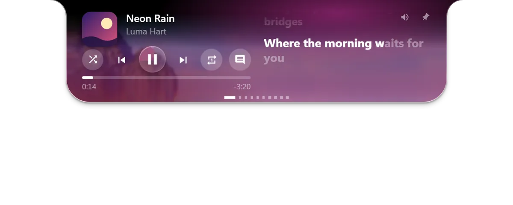
屏幕顶端，终于活了。
Dalu 是 Windows 的刘海。鼠标一指，音乐、歌词和计时器就展开。
歌词，跟着声音走。
Streetlights bloom along the river.
Every window hums a quiet tune.
Carry me past the midnight bridges.
只要歌曲带有时间信息，就能精确到每个字。
五个页面，一个刘海。
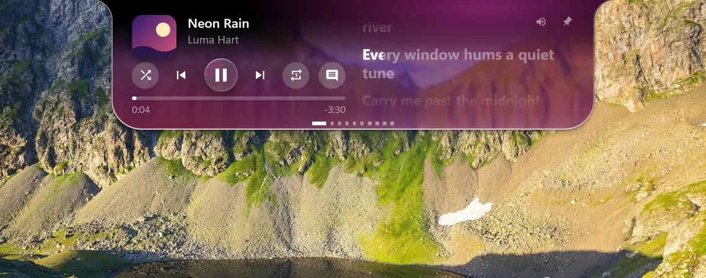
字字踩点。
歌曲带有时间信息时，每个字随演唱点亮。
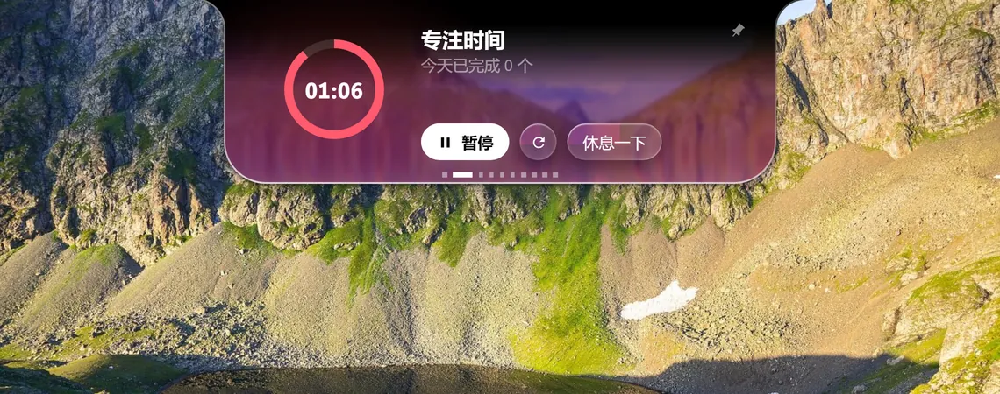
只做一件事。
番茄钟、计时器、饮水和待办，都在刘海里。
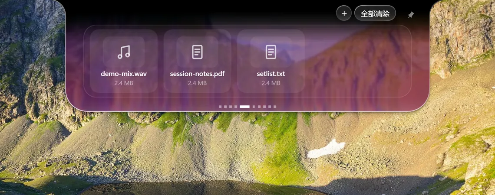
放下，带走。
把文件停在刘海上，再拖进任何窗口。
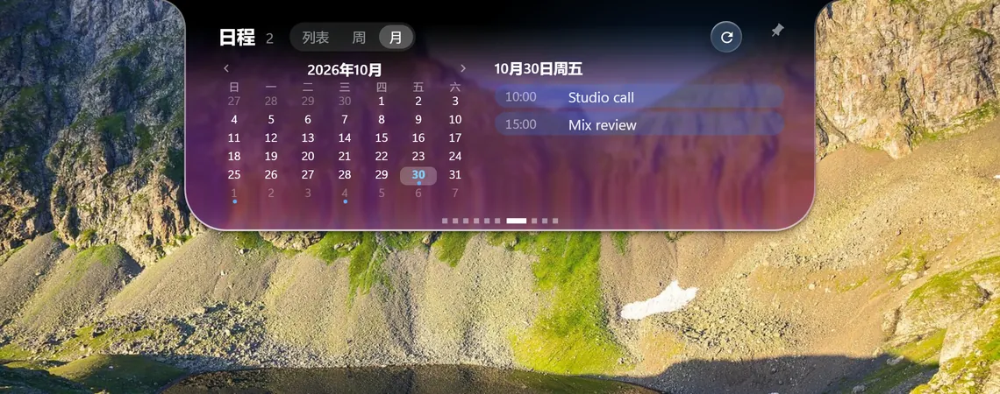
今天，一眼看清。
粘贴日历链接（.ics），按列表、周或月查看。
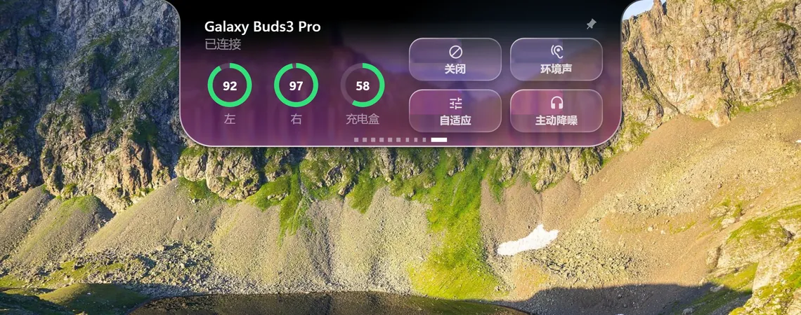
一点，安静。
不用打开任何东西，就能切换 Galaxy Buds 的降噪。
纯黑，或液态玻璃。
滚动页面，在两种外观之间切换。
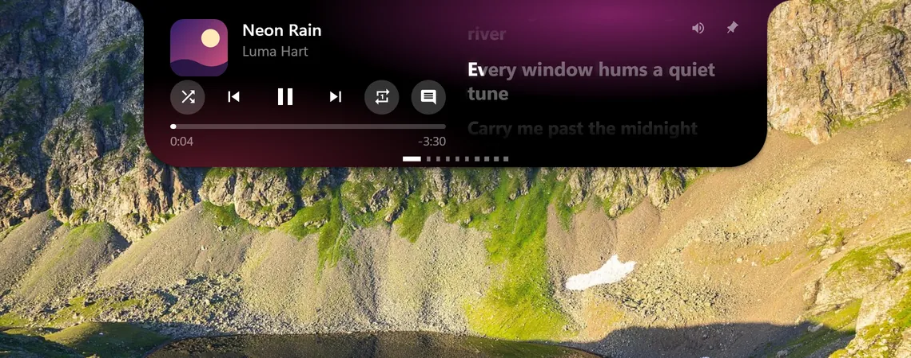
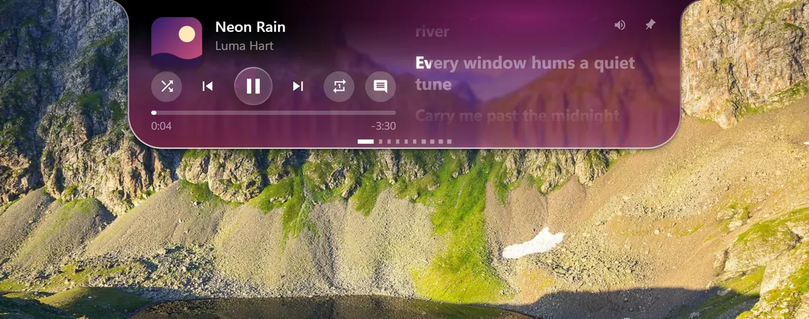
折射身后世界的玻璃。
选一张壁纸，刘海会折射它背后的画面。
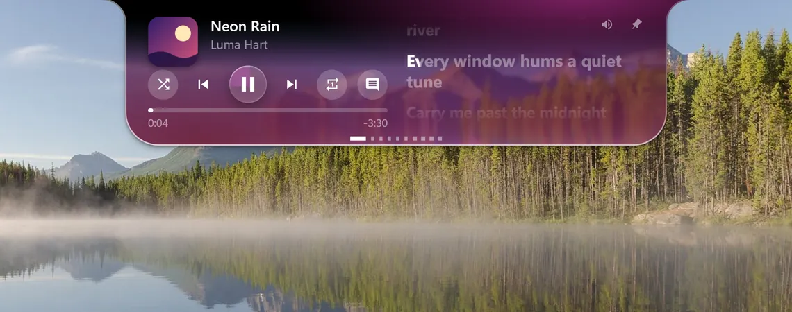
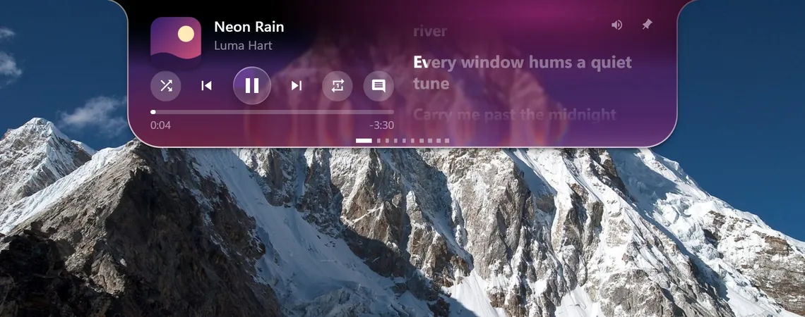
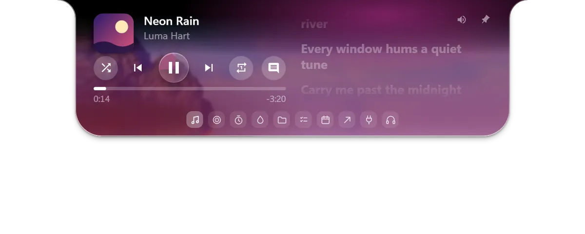
指向圆点，标签就出现。
小圆点在你指向它的瞬间变成标签图标。
九段，只属于你的声音。
调节均衡器，开启游戏模式，或只戴一只耳机也保持降噪。仅在 Buds3 Pro 上验证。
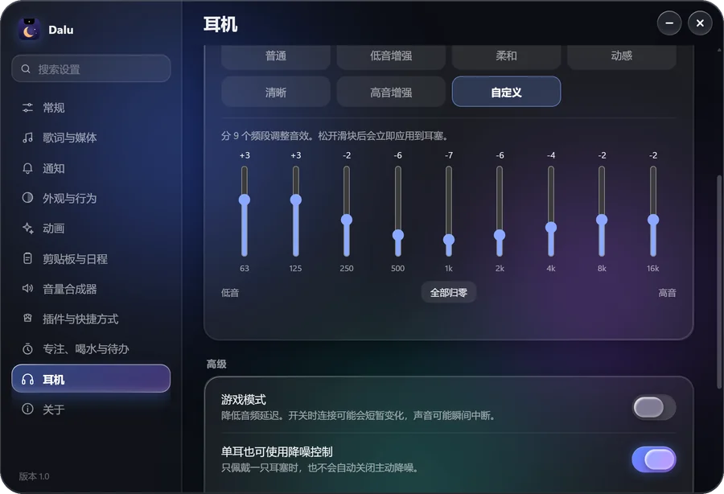
按你的方式来。
上百项设置，四种语言，插件只需一个 JSON 文件。
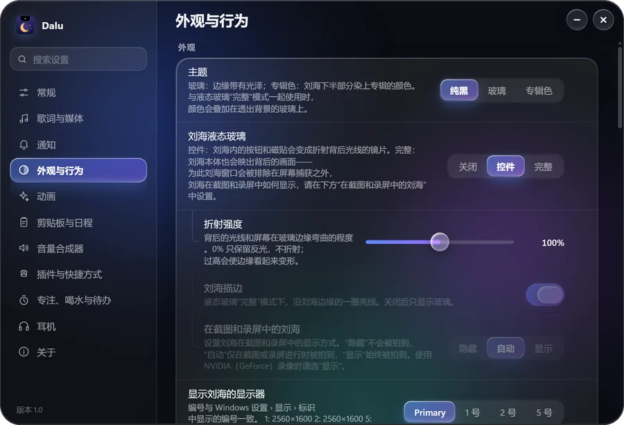
- 安装
- 无需管理员权限。
- 校验
- 下载页提供 SHA-256 校验值。
- 许可
- 源码公开，可非商业使用（PolyForm Noncommercial 1.0.0）。
没有代码签名，首次运行时 Windows SmartScreen 可能会提示。